mode
studio draws every full trajectory for analysis. showcase is the replay view; trajectories reveal over time. Shown mid volley replay.

studio default 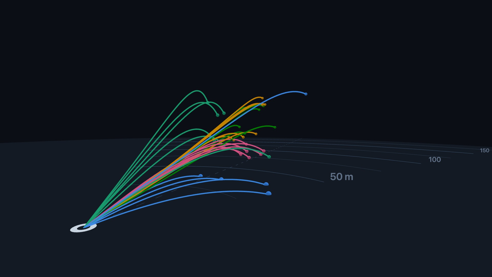
showcase cameraPreset
Framing presets sized to the data extent. Also settable at runtime with setCameraPreset, which flies the camera over.
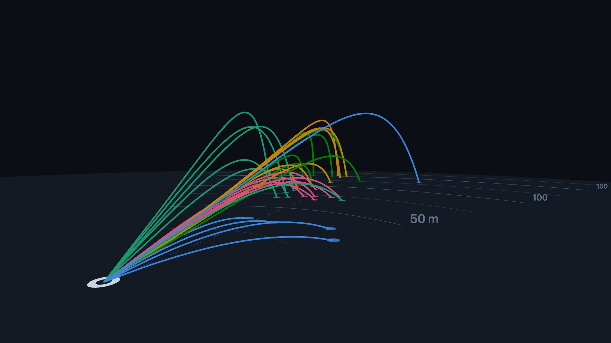
broadcast default 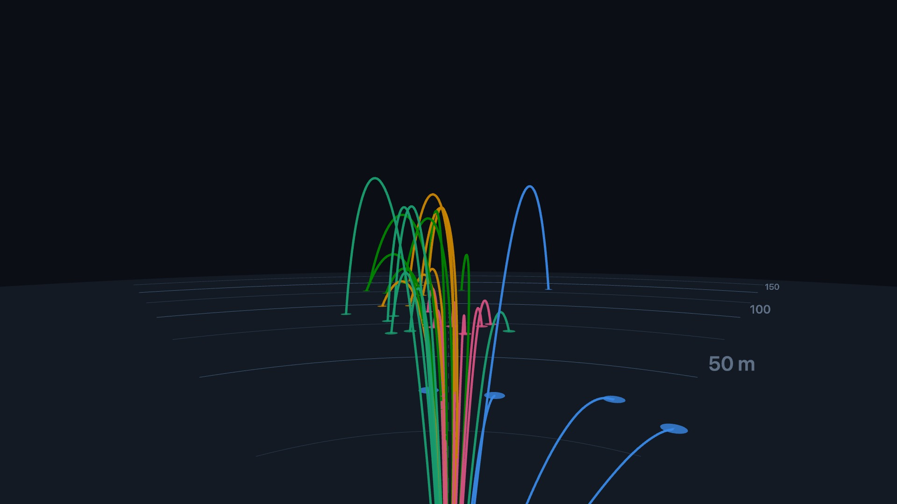
behind 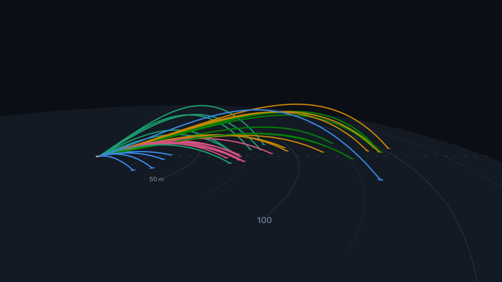
side 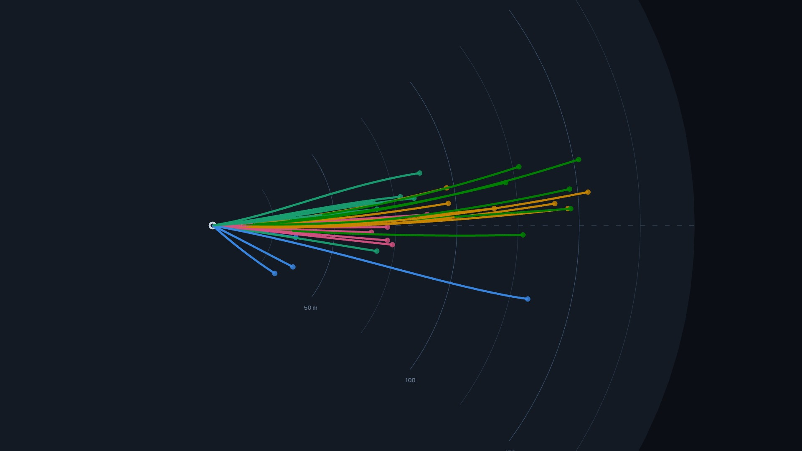
top 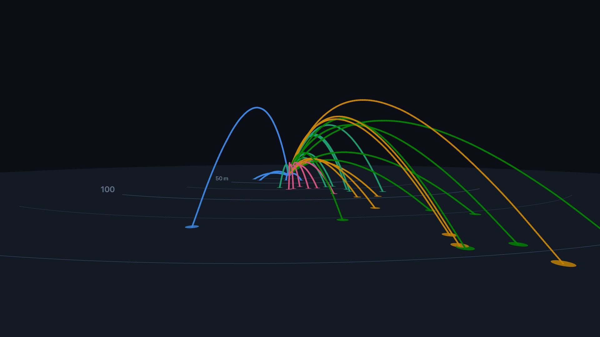
green colorBy
How tracer colors are assigned when shots carry no explicit color. club and session take fixed palette slots in order of first appearance. index cycles the palette per shot.

club default 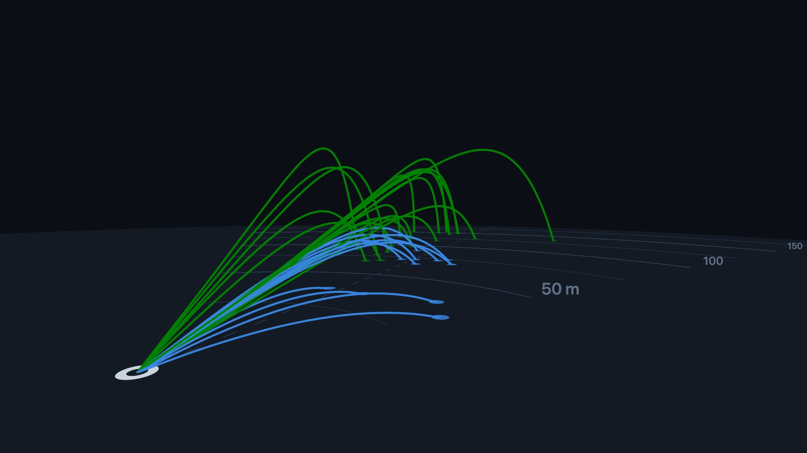
session 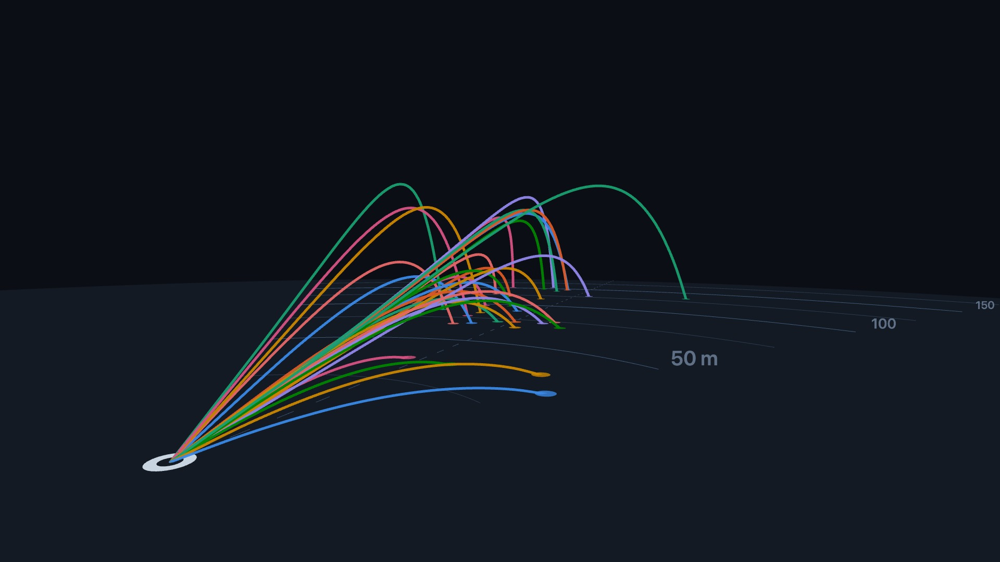
index palette
Ordered categorical colors, any CSS color. The default is CVD-validated for dark surfaces. Keys beyond the palette length render gray instead of cycling.

default 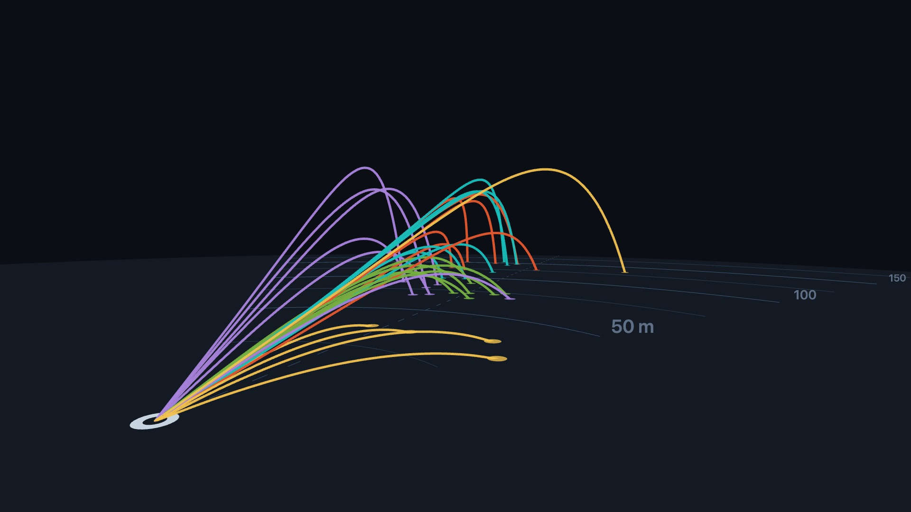
custom a warm custom palettebackground
Scene background as a CSS color, or null for a transparent canvas over whatever the page draws behind it. Fog matches the background color.

default '#0b0e14'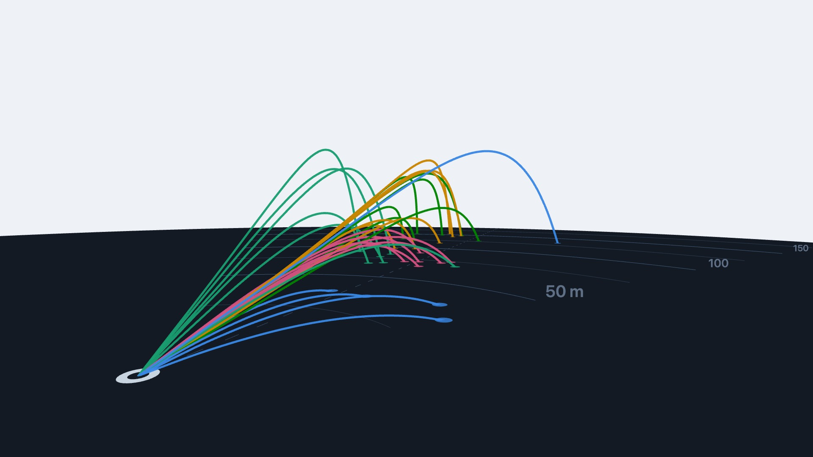
light '#eef2f7'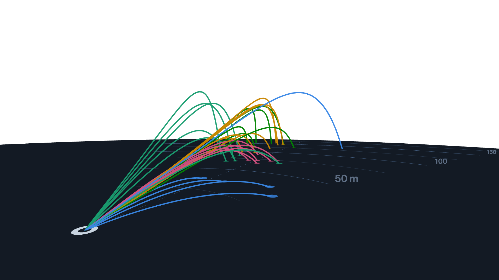
transparent null, shown on a checkerboardgroundColor
Floor disc color, any CSS color. The default blends into the dark theme. A turf green reads as grass.

default '#131a24'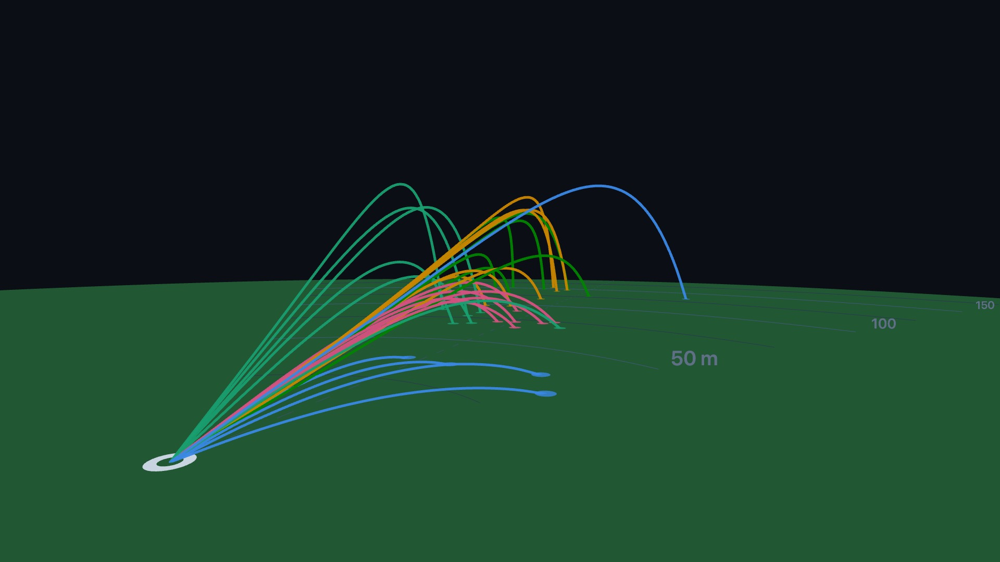
green '#215732'units
Display units for the ground distance arcs and tooltips. Data stays meters either way.

meters default 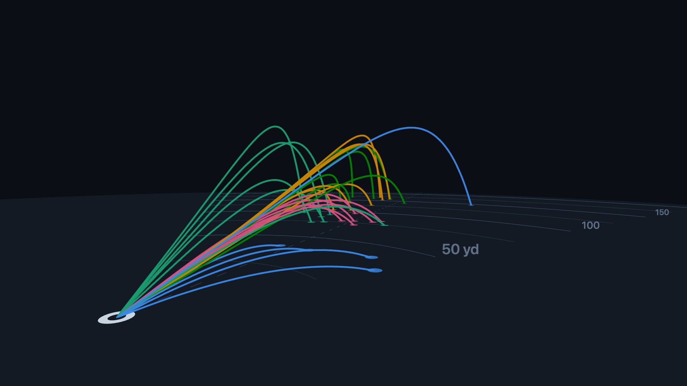
yards rollout
Off clips each trajectory at the first touchdown, so what you see is carry. On renders the measured bounce and rollout points past it.

false default 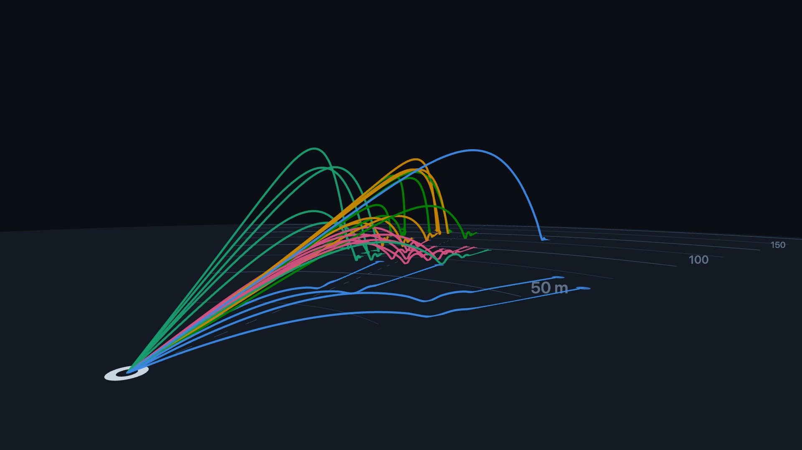
true autoRotate
Slow idle orbit around the scene. Good for kiosk or hero placements.
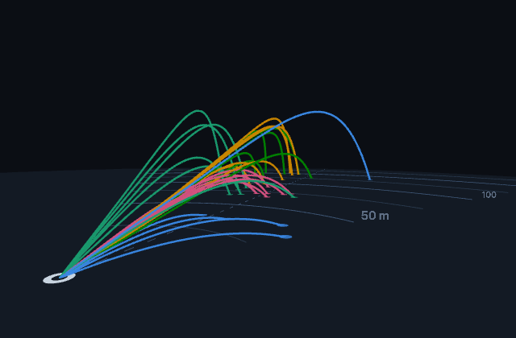
true orbit speed as captured, not exactplay({ order })
volley launches every shot at once; fast balls visibly outpace slow ones. sequence staggers launches. Both GIFs are time-compressed.
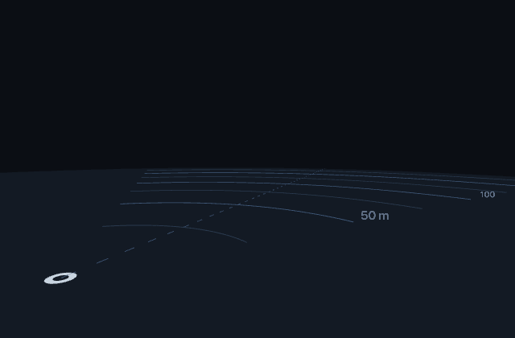
volley default sequence select(id)
Selecting a shot dims the rest. Click a tracer or call select(id); select(null) clears.
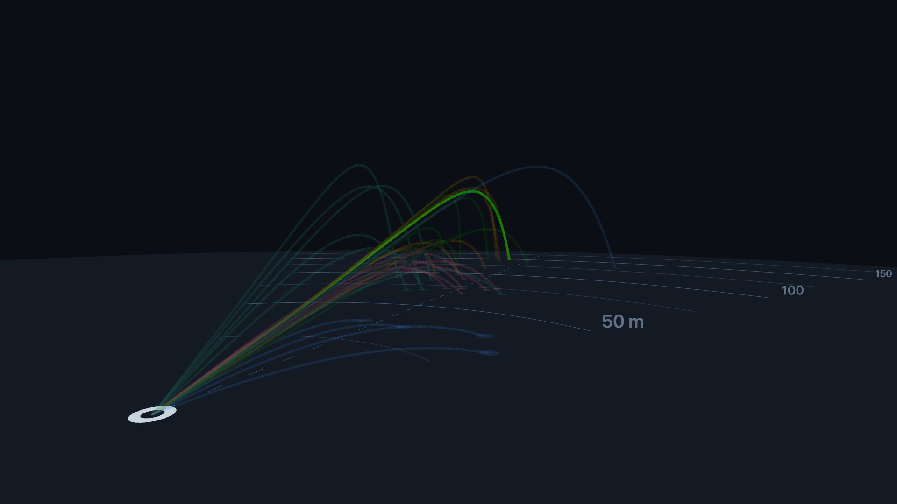
selected one shot selectedNot pictured
tooltipBuilt-in hover card with club, carry, apex, ball speed. A DOM overlay, so it only shows live. Try it in the demo.speedPlayback rate multiplier. play({ speed }) or setSpeed().loopRestart the replay when it ends. play({ loop: true }).staggerSeconds between launches in sequence order. Default 1.2.